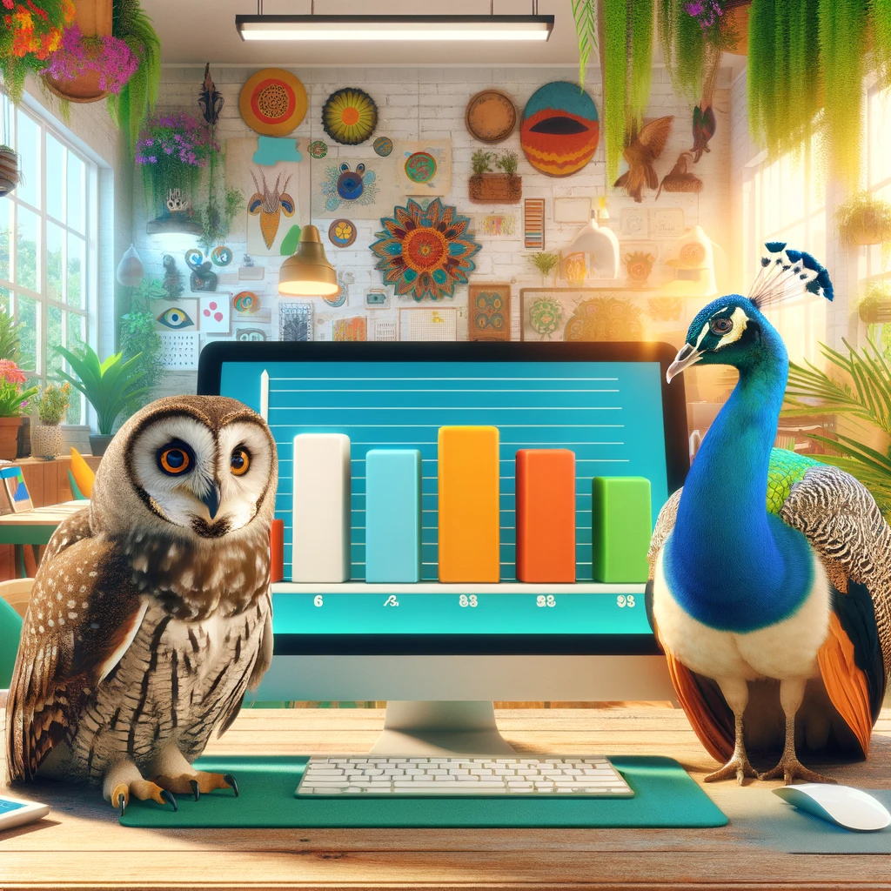
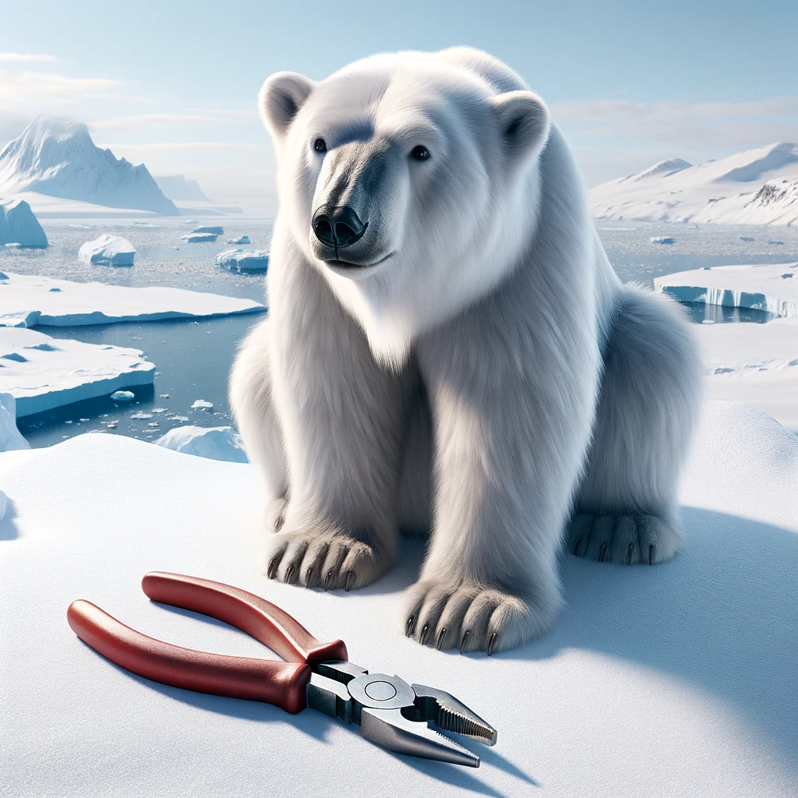
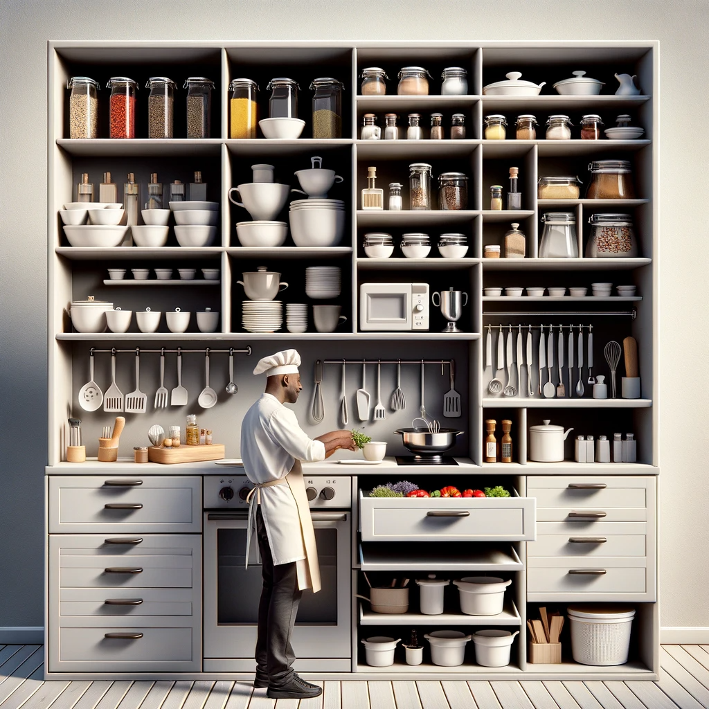

Tidy Intelligence
Blog
Coaching
Swag
Categories
All
(15)
Data
(3)
Julia
(1)
Manipulation
(4)
Python
(8)
R
(13)
Recommenders
(1)
Unsupervised Learning
(1)
Visualization
(5)

Tidy Data Visualization: ggplot2 vs matplotlib
A comparison of the two most popular data visualization tools for R and Python
Interactive Data Visualization with Python
A comparison of the dynamic visualization libraries plotly, bokeh and altair for the programming language Python
Interactive Data Visualization with R
A comparison of the dynamic visualization packages ggiraph, plotly and highcharter for the programming language R
Tidy Data: Tabular Data Storage Comparison
A comparison of popular open-source data storage technologies using R and Python
Tidy Data Visualization: ggplot2 vs seaborn
A comparison of two popular data visualization tools for R and Python
Tidy Data Visualization: ggplot2 vs plotnine
A comparison of implementations of the grammar of graphics in R and Python.
Tidy Data Manipulation: dplyr vs TidierData
A comparison of R’s dplyr and Julia’s TidierData data manipulation packages
Tidy Data Manipulation: dplyr vs pandas
A comparison of R’s dplyr and Python’s pandas data manipulation packages
Tidy Data Manipulation: dplyr vs ibis
A comparison of R’s dplyr and Python’s ibis data manipulation packages

Tidy Data Manipulation: dplyr vs polars
A comparison of R’s dplyr and Python’s polars data manipulation packages
Analyzing Seasonality in DAX Returns
Debunking the Halloween indicator for German market returns using R
Scraping ESG Data from Yahoo Finance
How to scrape environmental, social and governance risk scores using R
Clustering Binary Data
An application of different unsupervised learning approaches to cluster simulated survey responses using R

Tidy Data: A Recipe for Efficient Data Analysis
On the importance of tidy data for efficient analysis using the analogy of a well-organized kitchen
Tidy Collaborative Filtering: Building A Stock Recommender
A simple implementation for prototyping multiple collaborative filtering algorithms using R
No matching items
![The scene shows a human figure in a friendly and inviting office space, interacting with a simple data visualization on a screen. The office features softer lighting, more vibrant indoor plants, and cozy, colorful furniture that creates a welcoming atmosphere. The large windows let in plenty of natural light, but the overall vibe is relaxed and homelike. The person, smiling and in casual attire, is pointing at a basic, easy-to-understand chart on the screen, making the interaction appear more accessible and less formal. This image emphasizes a comfortable work environment and simplifies the complexity of data analysis. Created with DALL-E 3.](./posts/interactive-data-visualization-with-r/thumbnail.png)
![A server room with a more subdued and professional atmosphere. It features four different database servers, each representing a distinct tabular data storage technology. The first server has a sleek and efficient design, symbolizing a modern, high-performance database. The second server is sturdy and straightforward, indicative of a traditional, reliable database system. The third server is compact and practical, representing an efficient, resource-conserving database. The fourth is advanced yet unobtrusive, suggesting a sophisticated, AI-powered database. The room has soft lighting, with a focus on functionality and neatness. The overall ambiance is more business-like and less flashy, conveying a sense of serious technology at work. Created with DALL-E 3.](./posts/data-storage-comparison/thumbnail.png)

![An image of a bright and friendly office setting with two equally sized screens placed centrally. Each screen displays a simple line chart without any text or numbers. The office is very well-lit, giving a warm and inviting ambiance. The decor is colorful and cheerful, with a minimalist design. The two screens are on a sleek, modern desk in the center of the image. The line charts are clear and straightforward. The overall atmosphere of the office is lively and welcoming, with vibrant colors and ample natural light. Created with DALL-E 3.](./posts/ggplot2-vs-plotnine/thumbnail.png)